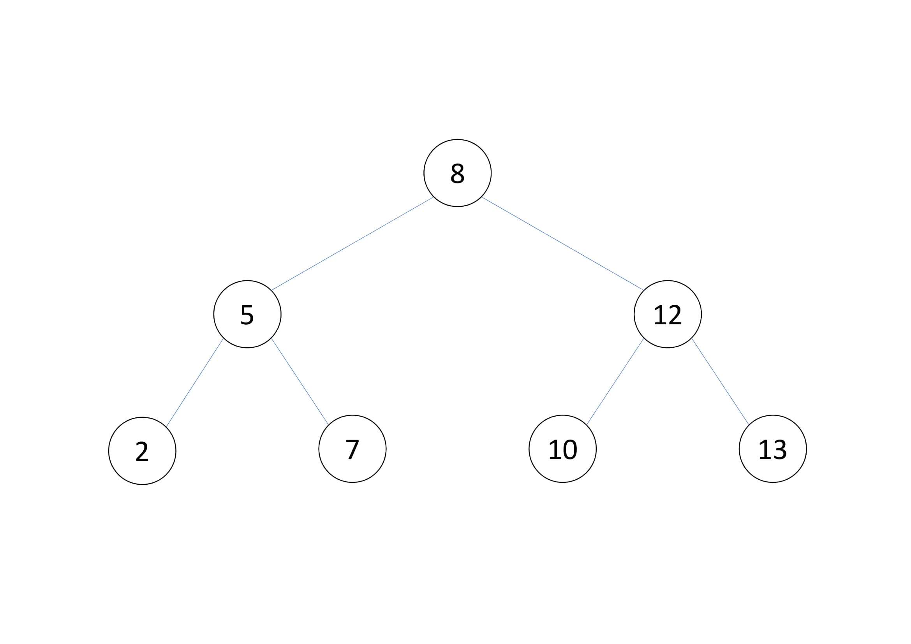
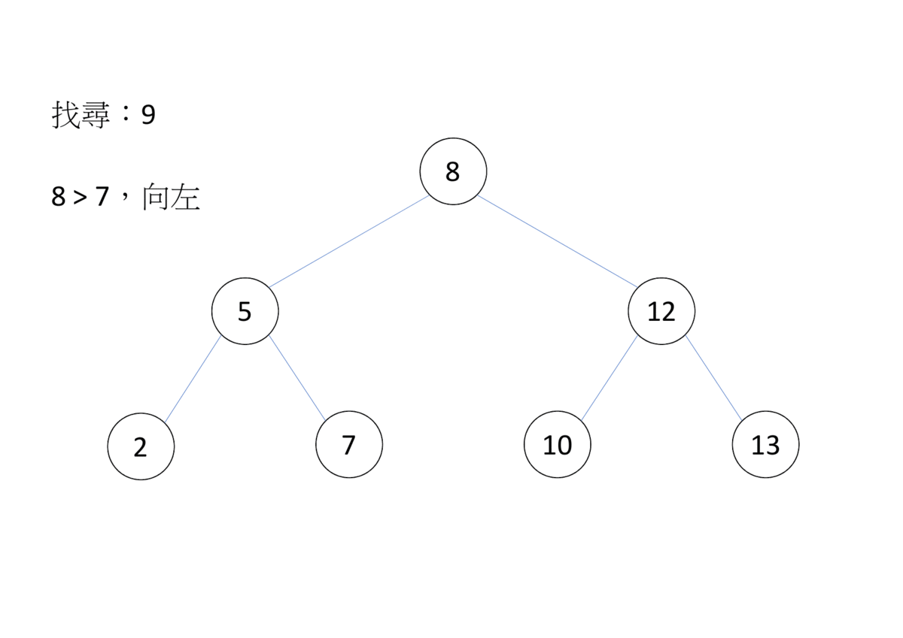

二元平衡樹 (Balanced Binary Search Tree)
二元搜尋樹
二元搜尋樹可在 時間內在大小為 的資料中找尋元素的二元樹。
- 
- 定義：
- 節點的值 > 左子樹每個節點的值
- 節點的值<右子樹每個節點的值
- 二元搜尋樹的左右子樹，也是二元搜尋樹
二元搜尋樹兩個重要的指令為插入和搜尋。
插入
1 2 3 4 | |

時間複雜度
每一次插入查詢的時間和深度有關，深度越高，效率越低，理想在二元搜尋樹的深度為 ，但最差狀況會是
搜尋
1 2 3 4 5 6 | |
-

-

二元平衡樹
二元平衡樹會自動調整高度，常見的有：紅黑樹、AVL 樹等。
STL
set 和 map 皆為紅黑樹實作，支援插入、刪除及查詢一個值，不同的是，set 會回傳鍵值，map 則是回傳對應值，也可以說 set 的鍵值和對應值一樣
set
- 標頭檔：
<set> - 建構式：
set <T1> s s.size()：回傳元素個數，複雜度s.empty()：回傳是否為空，複雜度s.clear()：清除元素，複雜度s.insert(T1 a)：加入元素 a, 複雜度 。s.erase(iterator first,iterator last)：刪除 , 若沒有指定 last 則只刪除 first, 複雜度 與加上元素個數有關係。s.erase(T1 a)：刪除鍵值 a, 複雜度 。s.find(T1 a)：回傳指向鍵值 a 的迭代器，若不存在則回傳 s.end (), 複雜度 。s.count(T a)：計算有幾個元素a。s.lower_bound(T1 a)：回傳指向第一個鍵值大於等於 a 的迭代器。複雜度 。s.upper_bound(T1 a)：回傳指向第一個鍵值大於 a 的迭代器。複雜度 。
1 2 3 4 5 6 7 8 9 10 11 12 13 14 15 16 17 | |
1 2 3 4 | |
pair
- 將兩個資料綁在一起
- 制造
pair：make_pair
insert 回傳
pair- 如果元素不存在：first 是指向剛插入的元素的迭代器、second 是 true;
- 如果元素存在：first 是指向鍵值為 k.first 的元素的迭代器，second 是 false。
map
- 下列同
setm.size()m.empty()m.clear()m.count()m.erase(iterator first, iterator last)m.erase(T1 a)m.find(T1 a)m.lower_bound(T1 a)m.upper_bound(T1 a)
m[a]：存取鍵值 a 對應的值，若 a 沒有對應的值，會插入一個元素，使 a 對應到預設值並回傳之。複雜度 。m.insert(pair<T1,T2> a)：加入元素 a，包含鍵值和對應值，複雜度 。
1 2 3 4 5 6 7 8 9 10 11 12 13 14 15 16 17 18 19 20 21 22 23 24 | |
1 2 3 4 5 6 7 8 9 | |
multi - 系列
可插入重複元素，代價為 map 無法用下標運算子
- equal_range (T1 a)：回傳 iterator 的
pair<lower_bound (a),upper_bound (a)>，為 a 所在範圍 - erase (T1 a)：刪除所有元素 a，如果只要刪除一個，用
s.erase (s.find (a))
unorder - 系列
降低常數，期望複雜度少一個 log，代價為不會排序，沒有 lower_bound/upper_bound ，也不會依鍵值大小遍歷。迭代器為單向。